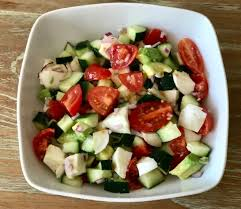

Ensalada de tomate y pepino

Descripción
Esta ensalada ligera y refrescante es ideal para acompañar cualquier plato principal.
Con una combinación crujiente de pepino y la jugosidad del tomate, cada bocado es una explosión de frescura.
Ingredientes
- 2 tomates maduros, cortados en cubos
- 1 pepino grande, pelado y cortado en rodajas finas
- 1/4 de cebolla roja, en rodajas finas (opcional)
- 2 cucharadas de aceite de oliva extra virgen
- 1 cucharada de vinagre de vino tinto o jugo de limón
- Sal y pimienta al gusto
- Hojas de albahaca fresca o perejil (opcional)
Preparación
- Prepare los vegetales: En un bol grande, mezcle los tomates, el pepino y la cebolla roja.
- Aderezo: En un recipiente pequeño, mezcle el aceite de oliva, el vinagre (o jugo de limón), sal y pimienta.
- Mezclar: Vierte el aderezo sobre los vegetales y mezcle suavemente para que todos los ingredientes se impregnen del sabor.
- Reposar: Deja reposar la ensalada durante 10 minutos para que se integren los sabores.
- Servir: Sirve fría y decora con hojas de albahaca fresca o perejil picado, si lo deseas.
Inicio